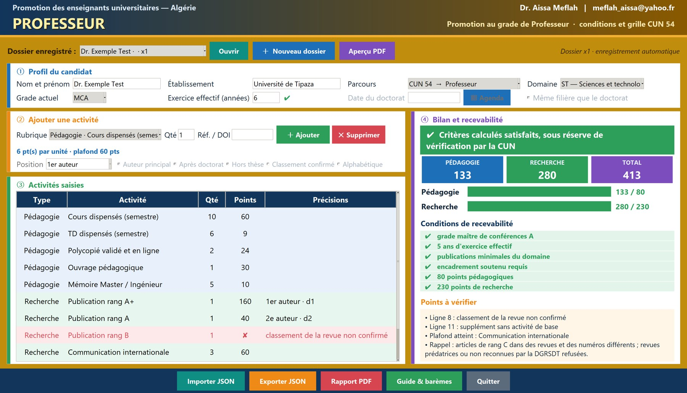
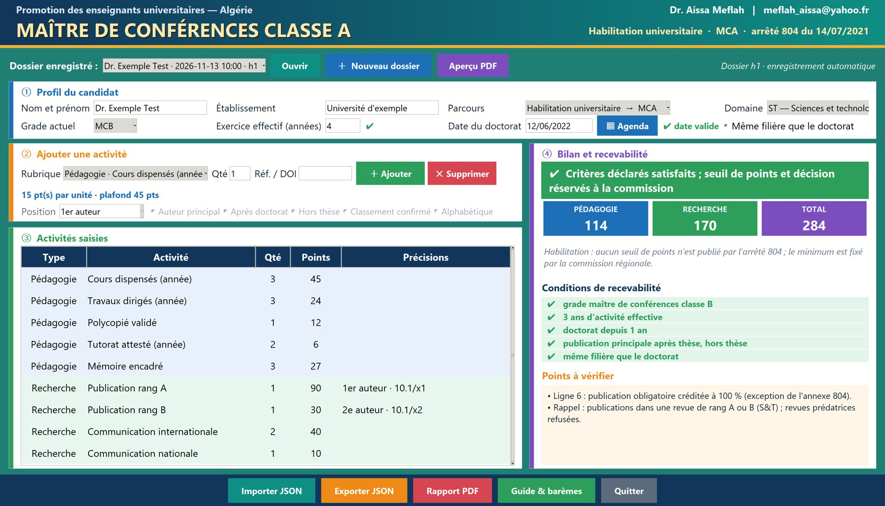
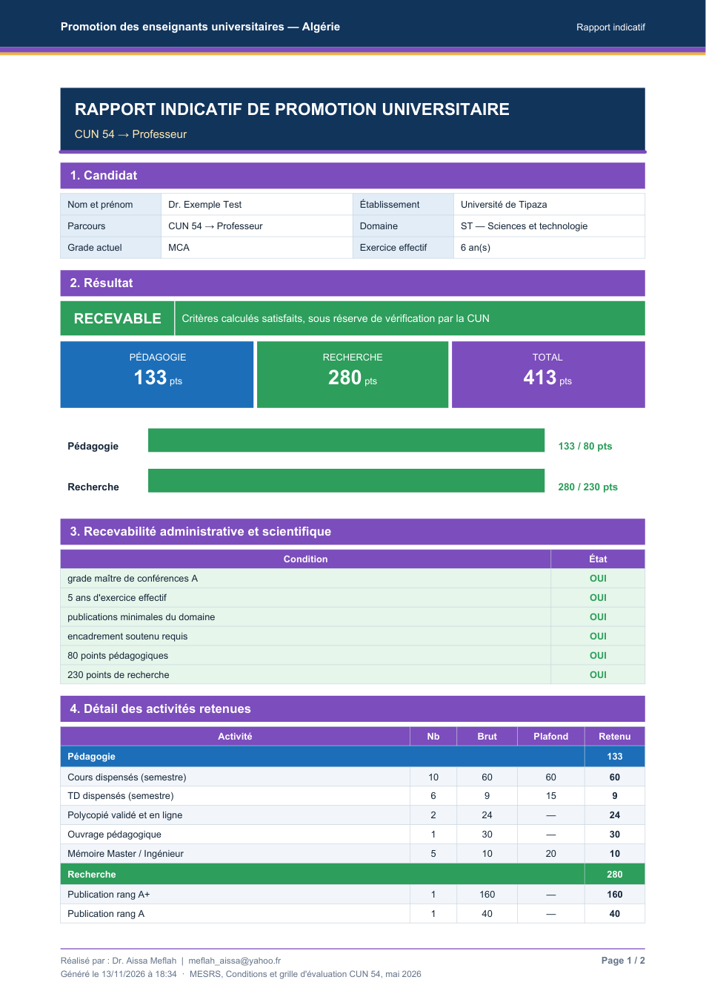

Fonctionnalités · المميزات
Tout est calculé sur votre ordinateur — vos données ne quittent jamais votre machine. · كل الحسابات على جهازك، وبياناتك لا تغادره.
Deux parcours
Habilitation (MCB → MCA) et Professeur (CUN 54), chacun avec son barème officiel.
مساران: التأهيل الجامعي والترقية إلى أستاذ، لكلٍّ منهما سلّمه الرسمي.
Calcul conforme
Points, plafonds, rangs des co-auteurs (100 / 50 / 25 %), suppléments, exception de la publication obligatoire.
النقاط والسقوف ونسب المؤلفين المشاركين والزيادات واستثناء المنشور الإلزامي.
Recevabilité
Grade, ancienneté, doctorat, publications minimales S&T / SHS, encadrement : ✔ / ✘ instantané.
شروط القبول: الرتبة والأقدمية والدكتوراه والمنشورات الدنيا وفق المجال والتأطير.
Rapport PDF
Aperçu avant export, puis un rapport coloré et structuré, prêt à joindre à votre réflexion.
معاينة قبل التصدير ثم تقرير PDF ملوّن ومنظم.
Sauvegarde automatique
Plusieurs dossiers conservés, import / export JSON, agenda pour les dates.
حفظ تلقائي لعدة ملفات، واستيراد وتصدير JSON، وأجندة لاختيار التواريخ.
Sources officielles
Arrêté n° 804 du 14/07/2021, décret 21-50, conditions et grille CUN 54 — fournis dans le dépôt.
القرار 804 والمرسوم 21-50 وشروط وسلّم الدورة 54، مرفقة في المستودع.
Aperçu · لقطات من البرنامج
Le titre et la couleur de l'interface s'adaptent au grade visé. · يتغير العنوان ولون الواجهة حسب الرتبة المستهدفة.



Données d'exemple fictives. · بيانات تجريبية وهمية.
Utilisation · طريقة الاستعمال
Domaines · الفروق بين المجالين
ST vs SHS
- Mêmes points par activité et mêmes plafonds.
- Publication obligatoire : A+/A/B en ST ; A/B/C en SHS.
- CUN 54 : minimum recherche 230 pts (ST) ou 120 pts (SHS) ; pédagogie 80 pts.
العلوم والتكنولوجيا مقابل العلوم الإنسانية والاجتماعية
- نقاط وسقوف النشاطات متطابقة.
- المنشور الإلزامي: A+/A/B في ST و A/B/C في SHS.
- الدورة 54: بحث ≥ 230 (ST) أو 120 (SHS)، وبيداغوجيا ≥ 80.
Sources · المراجع
- Arrêté n° 804 du 14 juillet 2021 — habilitation universitaire
- Décret exécutif n° 21-50 du 28 janvier 2021
- Conditions et grille d'évaluation CUN 54 (mai 2026)
L'arrêté 804 ne publie pas de seuil minimal de points pour l'habilitation : le programme n'en invente pas. · لا يحدد القرار 804 حدًا أدنى للنقاط في التأهيل، والبرنامج لا يخترع حدًا.